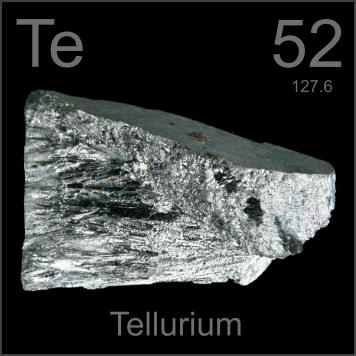

HOME
PREVIOUS
NEXT

Tellurium
Atomic Weight: 127.6
Density: 6.24 g/cm3
Melting Point: 449.51 °C
Boiling Point: 988 °C
Tellurium is hardly ever used in pure form, but these beautiful slender crystals are how it is distributed. Research is hindered by the fact that if you absorb even tiny amounts, you smell of garlic for months.